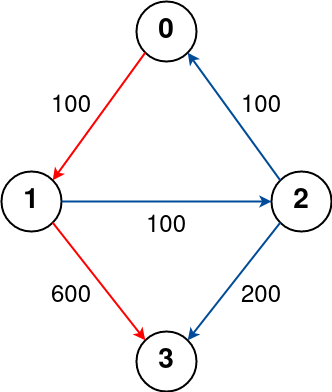
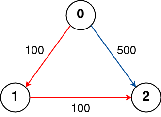
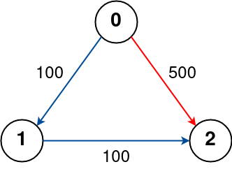

787. K 站中转内最便宜的航班
限制轮次的 Bellman-Ford：每轮用上一轮的 dist 快照松弛全部边，跑 k+1 轮，dist[dst] 即答案。
思路
- 普通最短路没有「中转次数」概念，Bellman-Ford 的轮数恰好对应「最多飞几条边」：第 r 轮后
dist是最多r条边的最短路。 k站中转 = 最多k+1条边，所以跑k+1轮。- 每轮必须先
clone快照：若用本轮已更新的值继续松弛，一轮会串起多条边，把超限的路径也算进来。 - 没用 Dijkstra：它按「距离」出队，无法表达「边数限制」这层状态。
图解
最优解
1import java.util.*;2 3class Solution {4 public int findCheapestPrice(int n, int[][] flights, int src, int dst, int k) {5 final int INF = Integer.MAX_VALUE / 2;6 int[] dist = new int[n];7 Arrays.fill(dist, INF);8 dist[src] = 0;9 // 限制轮次的 Bellman-Ford：第 r 轮后 dist = 最多走 r 条边的最短路10 for (int r = 0; r <= k; r++) {11 int[] nxt = dist.clone(); // 用上一轮的快照，保证每轮只多飞一条边12 for (int[] f : flights) {13 if (dist[f[0]] + f[2] < nxt[f[1]]) nxt[f[1]] = dist[f[0]] + f[2];14 }15 dist = nxt;16 }17 return dist[dst] >= INF ? -1 : dist[dst];18 }19}题目
有 n 个城市通过一些航班连接。给你一个数组 flights ，其中 flights[i] = [fromi, toi, pricei] ，表示该航班都从城市 fromi 开始，以价格 pricei 抵达 toi。
现在给定所有的城市和航班，以及出发城市 src 和目的地 dst，你的任务是找到出一条最多经过 k 站中转的路线，使得从 src 到 dst 的 价格最便宜 ，并返回该价格。 如果不存在这样的路线，则输出 -1。
示例 1：

输入: n = 4, flights = [[0,1,100],[1,2,100],[2,0,100],[1,3,600],[2,3,200]], src = 0, dst = 3, k = 1 输出: 700 解释: 城市航班图如上 从城市 0 到城市 3 经过最多 1 站的最佳路径用红色标记，费用为 100 + 600 = 700。 请注意，通过城市 [0, 1, 2, 3] 的路径更便宜，但无效，因为它经过了 2 站。
示例 2：

输入: n = 3, edges = [[0,1,100],[1,2,100],[0,2,500]], src = 0, dst = 2, k = 1 输出: 200 解释: 城市航班图如上 从城市 0 到城市 2 经过最多 1 站的最佳路径标记为红色，费用为 100 + 100 = 200。
示例 3：

输入：n = 3, flights = [[0,1,100],[1,2,100],[0,2,500]], src = 0, dst = 2, k = 0 输出：500 解释： 城市航班图如上 从城市 0 到城市 2 不经过站点的最佳路径标记为红色，费用为 500。
提示：
2 <= n <= 1000 <= flights.length <= (n * (n - 1) / 2)flights[i].length == 30 <= fromi, toi < nfromi != toi1 <= pricei <= 104- 航班没有重复，且不存在自环
0 <= src, dst, k < nsrc != dst
题面取自力扣当前版本。
数据快照 2026-11-04。题面版权归力扣所有，本站点仅供本人学习使用，请勿对外发布。